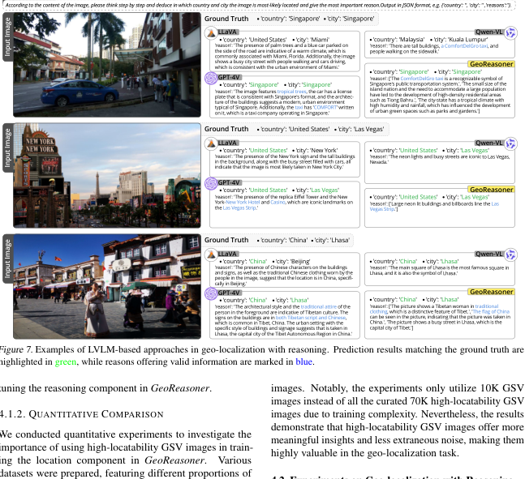

This work tackles the problem of geo-localization with a new paradigm using a large vision- language model (LVLM) augmented with human inference knowledge. A primary challenge here is the scarcity of data for training the LVLM - existing street-view datasets often contain numer- ous low-quality images lacking visual clues, and lack any reasoning inference. To address the data- quality issue, we devise a CLIP-based network to quantify the degree of street-view images being locatable, leading to the creation of a new dataset comprising highly locatable street views. To en- hance reasoning inference, we integrate external knowledge obtained from real geo-localization games, tapping into valuable human inference capabilities. The data are utilized to train GeoRe- asoner, which undergoes fine-tuning through ded- icated reasoning and location-tuning stages. Qual- itative and quantitative evaluations illustrate that GeoReasoner outperforms counterpart LVLMs by more than 25% at country-level and 38% at city- level geo-localization tasks, and surpasses Street- CLIP performance while requiring fewer training resources. The data and code are available at https://github.com/lingli1996/GeoReasoner. 1. Introduction Street-view geo-localization seeks to predict geographical locations for the given street-view images. The significance of street-view geo-localization is evident in a variety of ap- plications, spanning social studies (Ye et al., 2019b), urban planning (Shen et al., 2018), and navigation (Chalvatzaras 1The Hong Kong University of Science and Technology (Guangzhou) 2Tongji University 3Strategic Support Force Infor- mation Engineering University 4The Hong Kong University of Science and Technology. Correspondence to: Bingchuan Jiang
If you find this paper useful, please consider citing it.
@inproceedings{li2024georeasoner,
author = {Ling Li and Yu Ye and Bingchuan Jiang and Wei Zeng},
title = {{GeoReasoner: Geo-localization with Reasoning in Street Views using a Large Vision-Language Model}},
booktitle = {Proceedings of The 41st International Conference on Machine Learning},
pages = {29222-29233},
year = {2024},
}